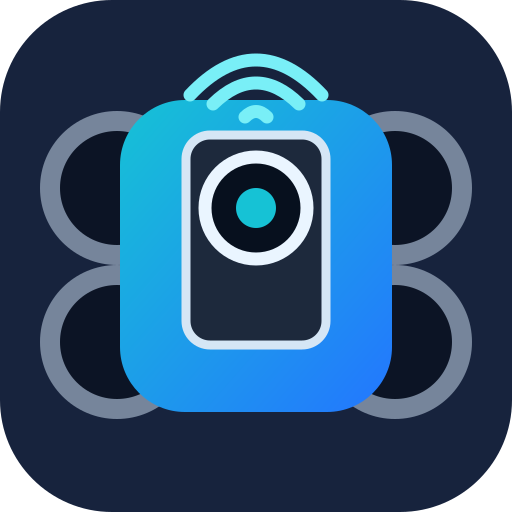

왼쪽 블록을 끌어서 시작하면 또는 계속 반복하기 안에 연결하세요.

연결 실패가 나올 때만 IO0/BOOT를 누른 채 RST를 짧게 누르고, IO0/BOOT를 놓은 뒤 다시 설치하세요.
모터 기능 없이 OV2640 영상과 Wi‑Fi만 확인합니다. 설치 후 OneMaker-CAM-TEST에 연결하고 192.168.4.1을 여세요.
카메라와 모터 PWM 충돌을 수정한 RC카 펌웨어 0.1.2입니다. 영상과 조종 버튼을 한 화면에서 사용하며 QVGA가 기본값입니다.